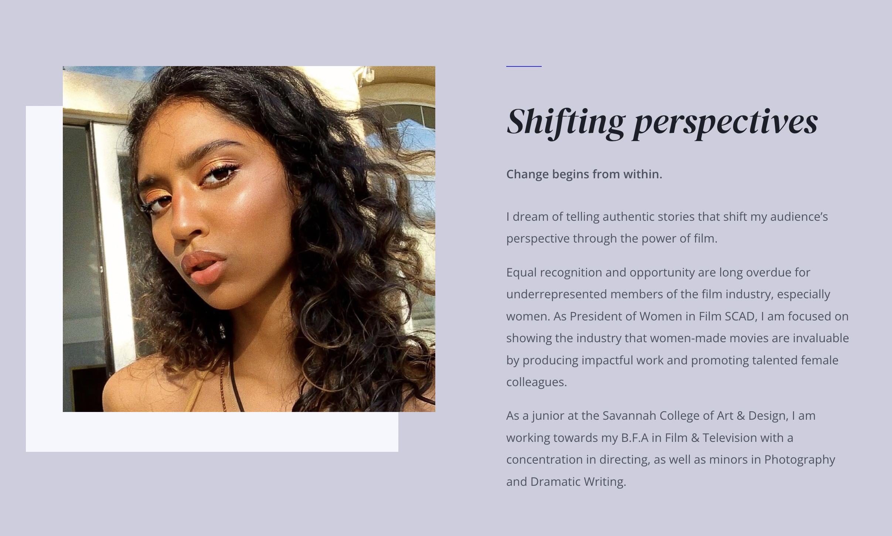

A Director's Portfolio
Overview
Through this project, I designed and developed a portfolio website for Raeya Ponugoti, an Atlanta-based director.
Film at the Focus
Instead of a hero image, I placed her film reel at the start of her website.
This allows users to immediately grasp Raeya's medium of art and her talent.

Authenticty: A Theme
Keeping true to the director's values was very important for this project. I incorporated her desire to be authentic and seek opportunities wherever I could. Here is her about page:
